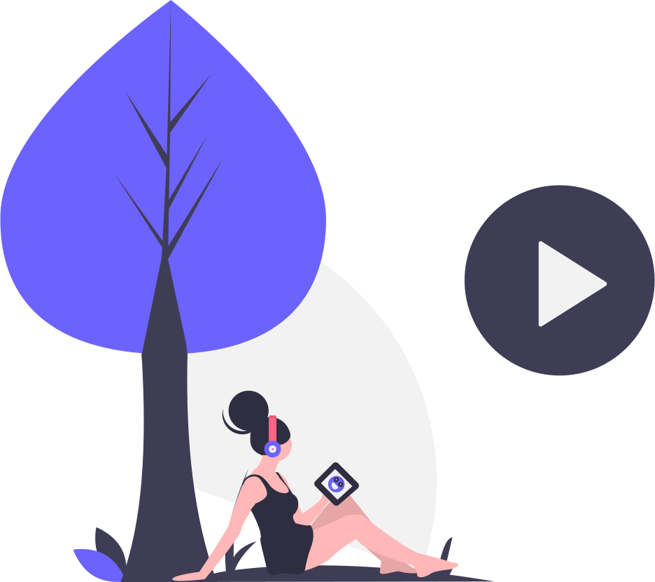

About Florian
Florian is a part-time content creator based in the Lyon Area, France. He is French and 11th Grade (french equivalent).
He learned programing in his bedroom. Passionate, he learned how to code in python, javascript and java.
With over 200€ earned by freelancing and have for goal to create a youtube channel based on tech and life,
his online content aims to show people whats looks like the life of young passionate freelance, through his lifestyle, career,
and tech advice videos by talking about topics such as codding environment, culture life goal, and emotio nal vulnerability.
YOUTUBE
Florian create youtube videos about software Engineering, tech, lifestyle and life goal.
He want to show people what being passionate to programing and earn money from it looks like,
and help people to figure it out.

PROGRAMMING STUDENT
Since his 12 years old, he became more & more interested by Computer Science. He started by learn Python,
a very great one to start codding. Then he learn Web development, starting by javascript, and more recently html & css.

LIFE GOAL
Now, He want to create a big community on both youtube & twitch, Build a huge set of contact on Instagram. Develop new skills in view to share them and go through projects.

TWITCH
He is also streaming codding session, gaming in both english and french.
Even passionate of computer sciences, Florian is above all a gamer,
he started with Call of Duty on Wii and now playing pretty often to games like Valorant,
CS:GO, Osu!, Destiny 2 etc...
